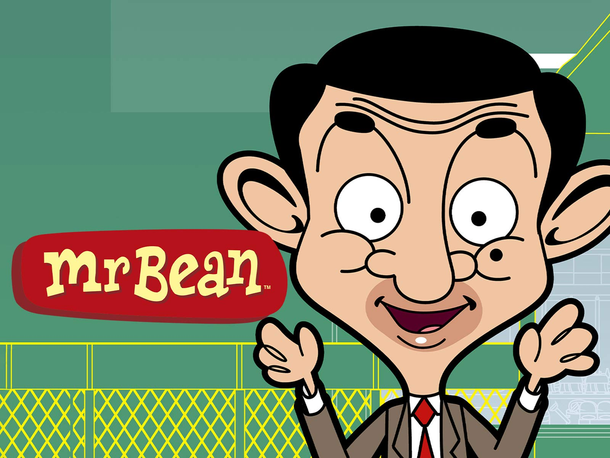
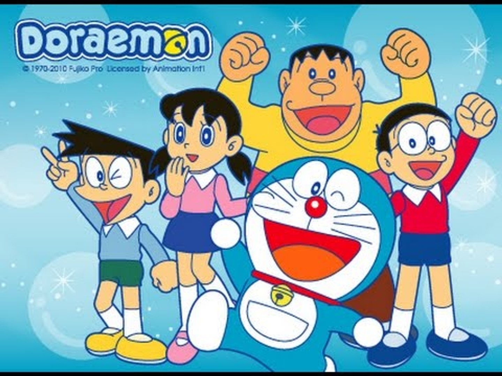

My Most Favorite Cartoons
“Sometimes, the smallest things take up the most room in your heart.”
Cartoon has always been an important part of my lifestyle during childhood. I always used to connect myself with cartoon characters. It’s not only me who loved cartoons this much. There are lots of younger people across the world who love this illustration work.Therefore, here are some of my favorite cartoons.
| Tom & Jerry | Mr.Bean | Doraemon |
|---|---|---|
 |
 |  |